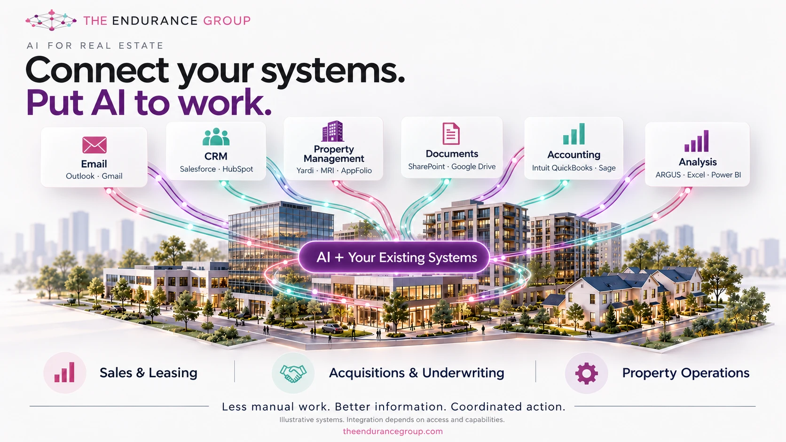

TEG is an official member of the Anthropic Claude Partner Network. We build Claude Skills, Projects, and MCP integrations for B2B ops teams. See our full Claude services.
The short version: AI for real estate delivers the most value when it connects to the systems you already run (email, CRM, property management, documents, accounting and analysis) and reads across them at once. Those connections are always in flux as vendors, APIs and processes change, so they need a partner to monitor and maintain them after launch.
Last week I spent two days at CREtech New York at the Javits Center. The theme this year was "Real Estate in the Age of AI," and I expected plenty of AI talk. What surprised me was how consistent the conversation was, from the main stage to the hallway to the coffee line.
Almost everyone in real estate wanted the same thing. They did not want one more AI tool. They wanted AI that could glean information and insights from all of the tools they already use, at the same time.

What do real estate teams want from AI?
The question took a few forms, but it was always the same underneath: "Can AI look across everything we have and tell us what matters?"
Think about how a real estate company actually runs. Conversations live in Outlook or Gmail. Relationships live in Salesforce or HubSpot. Leases, work orders and rent rolls live in Yardi, MRI or AppFolio. Contracts and diligence files sit in SharePoint or Google Drive. The books are in QuickBooks or Sage. The underwriting lives in ARGUS, Excel and Power BI.
Each system holds part of the answer. No single person can hold all of it in their head. People described spending their days toggling between tabs to answer questions like "what is happening with this tenant" or "where does this deal really stand," and they wanted that work to disappear.
Why is connected AI different from another AI tool?
A chat window with no access to your data can write a decent email. It cannot tell you that the tenant who just emailed you is two months behind in the accounting system, has an open work order in property management, and a lease expiring next spring. That answer only exists when the AI can read across the systems.
That is the shift I heard at CREtech. The excitement was not about a smarter chatbot. It was about connecting AI to the systems of record so the information, the analysis and the follow-up action all happen in one place. Less manual work, better information and coordinated action across sales and leasing, acquisitions and underwriting, and property operations.
It is also what we have been building for real estate teams at TEG. If you want the short version of how that looks for your type of firm, our real estate page lays it out.
What happens after the AI is connected?
Here is what I did not hear much of on stage: what happens in month six.
Connecting AI to your systems is not a one-time project. It is a living thing, because the systems underneath it are always in flux. Vendors ship updates and change their APIs. Fields get renamed. Permissions are reorganized. A new property management platform comes in after an acquisition. Someone changes a report format in Excel and a downstream process quietly stops working. Your own team changes how it works every quarter.
Each of those changes can break a connection or, worse, make it return a wrong answer without anyone noticing. In real estate, where decisions involve real money and real tenants, a quietly wrong answer is more dangerous than no answer.
Why do you need a partner to maintain AI integrations?
This is why I tell every real estate leader the same thing. Do not buy this as a project. Plan for it as a capability that someone owns.
Most firms do not have an in-house person whose job is to watch every integration, track every vendor change, and keep the AI accurate as the business evolves. That is not a knock on your team. It is a different skill set, and it is a moving target.
A good partner does four things after launch:
- Monitors the connections so a broken link is caught before your team relies on a bad answer.
- Adapts to change when a vendor updates a product, you switch platforms, or a process shifts.
- Keeps the information trustworthy by checking outputs against the source systems.
- Keeps improving by adding new systems and new uses as your team gets comfortable.
That ongoing relationship is what we offer through Managed Claude. We build it, and then we stay and keep it working.
Where should a real estate team start?
If you left CREtech, or skipped it, with the same itch to put AI to work across your stack, start small. Pick one workflow that crosses at least two systems, such as lease renewals, investor reporting or leasing follow-up. Connect it, prove it, and put someone accountable for keeping it healthy. Then expand.
If you want help picking that first workflow, we start every engagement with a free AI Value Assessment. You can also see how we work with real estate firms on our real estate page, or read our earlier guides on AI tools for commercial real estate brokers and Claude for real estate.
Frequently asked questions
Why do real estate teams want AI connected to all their systems?
Their information is spread across email, CRM, property management, documents, accounting and analysis tools. AI connected to those systems can pull answers from several of them at once instead of someone checking each one by hand.
Does connecting AI to your systems mean replacing them?
No. The goal is to leave Outlook, Salesforce, Yardi, MRI, AppFolio, QuickBooks, ARGUS and the rest in place and put AI on top so it can read across them and help coordinate action.
Why do AI integrations need ongoing maintenance?
The systems underneath are always changing. Vendors update products and APIs, permissions and fields shift, and teams change how they work. A connection that works today can quietly break next quarter without someone responsible for keeping it healthy.
What does a partner like TEG do after the build?
We monitor the connections, fix what breaks, adapt them when your tools or processes change, and keep improving what the AI can do across your stack.
Related reading
AI tools for commercial real estate brokers: what's actually useful
Where AI saves CRE teams the most time, and what to skip.
AI automation for property management companies
Where AI automation saves the most time for property managers.